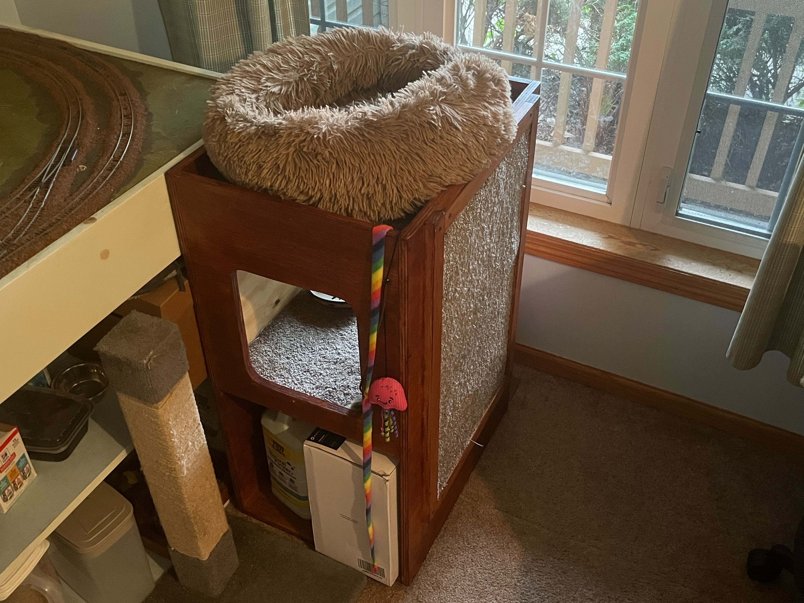
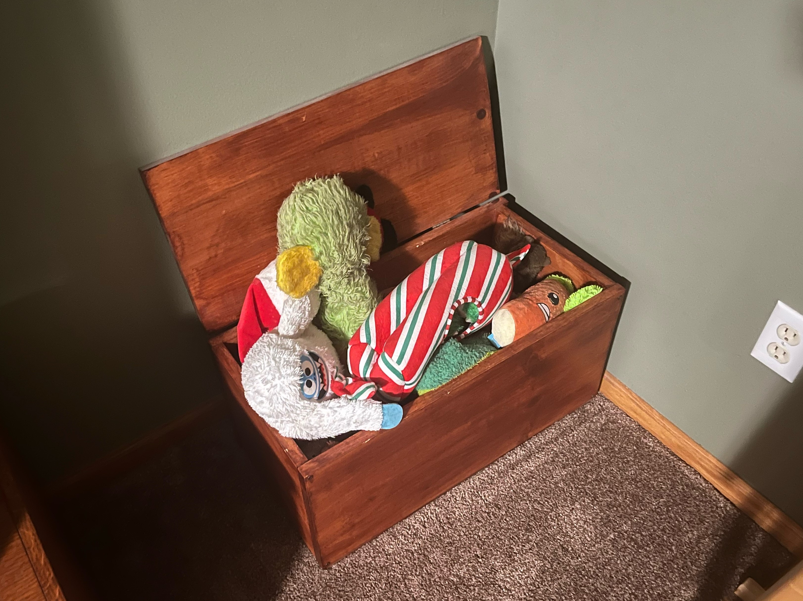
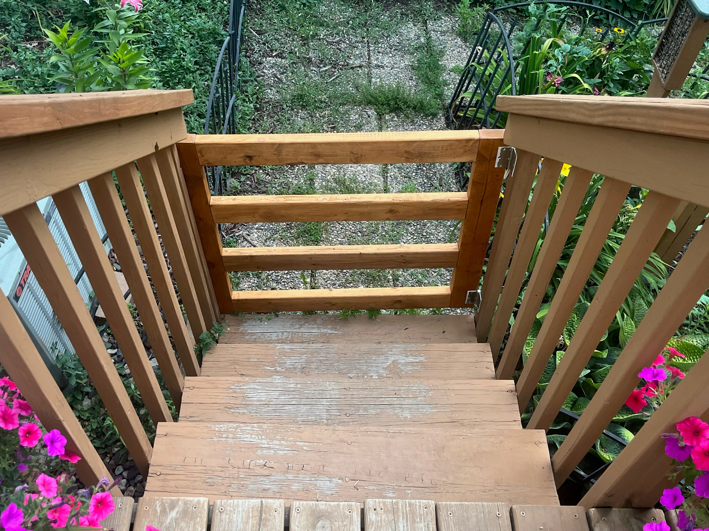
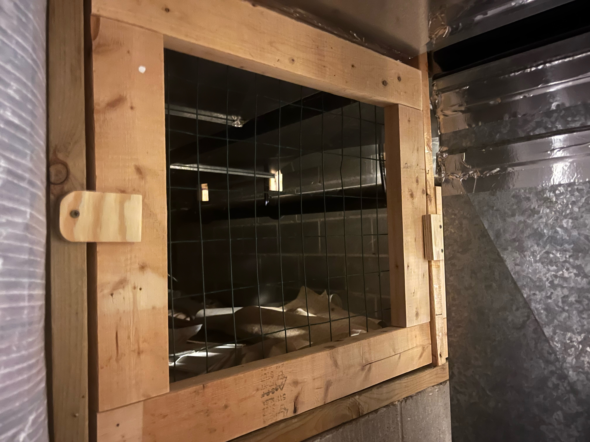
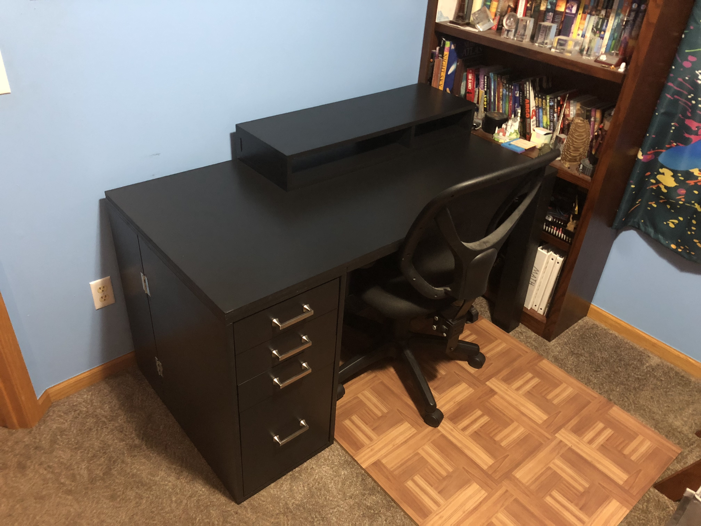
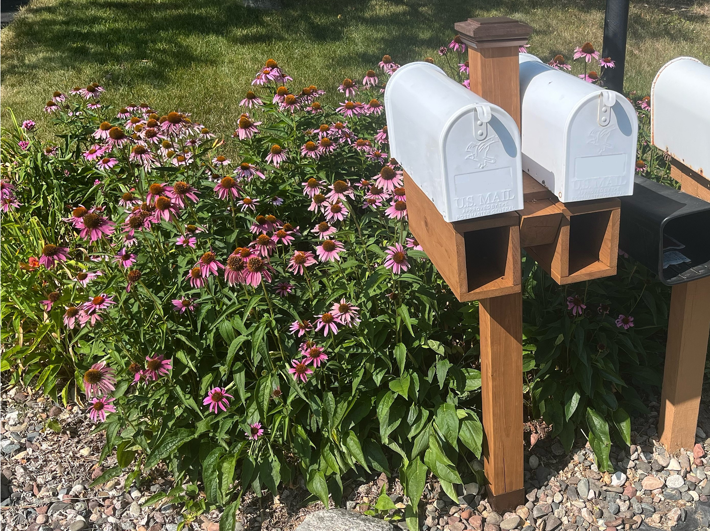

Over the years, I've gotten better at woodworking through numerous projects that enabled me to try different woodworking processes.
As tasks for the family pets, I've made our cats some places to use around the house and an outdoor enclosure, a dog toy box, and a birdfeeder. Most of these projects have been improvised out of scrap wood. One cat stand has 1/2" plywood sides with the structure made of 2x2" beams, another stand has 3/4" plywood for the structure with some storage space below, and they were both stained with spare deck stain. I've also made two different types of gates to keep the dogs on/off the deck and keep the cats out of the basement crawlspace. These projects were also completed using scrap wood and spare hardware.




In my senior year of high school, I got fed up with my small Ikea desk not having enough space, so I designed and built my own. I added storage through a set of drawers and a raised platform for monitors. This was the primary issue with my old desk. I couldn't work on paper homework because I couldn't move my keyboard out of the way. The raised monitors gave me space to move the keyboard. There is also space behind the drawers to store a power strip and any excess cord to keep me from kicking them while at my desk. I was excited to use pocket holes for the first time, and they're now a favorite because everything is easy to assemble and still looks good. I used 3/4" plywood for most parts of the desk, but MDF makes up the body of the drawers. Two 4x4's make up the legs on one side of the desk. I could've done better on drawer spacing, but overall, I'm happy with the final product as it fixes all the issues I was having and hasn't introduced any new issues. In the future, I plan to replace the desktop with something that better resists scratching.


My most recent woodworking project was a new mailbox post. After years of use, my family's old mailbox post had rotted out at the base to the point that it wobbled around in its bracket, so it was time for a new one. The new post was based off the old one, but had to be adjusted to make the mailbox sit where USPS guidelines directed. We also decided to make newspaper boxes instead of getting new plastic ones added by an interested party. I used pocket holes to connect four of the five sides of the newspaper boxes. I got to try notching out two sections of 4x4" and practice proper order of assembly in order to get everything put together. The new mailbox post and newspaper boxes look much better than the old, cracked post with plastic boxes and should last for just as long, if not longer, with proper re-staining.